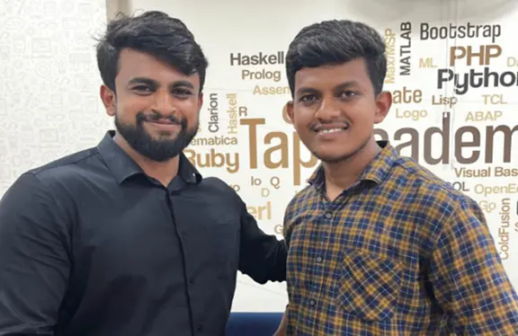

Gowtham GM A warm thanks to the Tap Academy team. I am Gowtham GM from Tamilnadu, a 2024 passed-out student. I joined Tap Academy as a CSR student in the month of February. My journey with Tap Academy is quite different. The trainers at Tap Academy are skilled and experienced. They teach a lot of new concepts and help in learning programming languages from scratch.
Gagan GR After joining Tap Academy, I have improved my programming skills, and my knowledge of core Java has also improved. Now, I am learning the Collection Framework, MySQL, HTML, and CSS in parallel.

I'm a student from the Feb 2 batch, and I'm happy to share my experience with Tap Academy. They visited our college in Tamil Nadu and selected students for their CSR batch, offering a free course that's been incredibly helpful. Compared to other academies, Tap Academy stands out for its excellent trainers, who explain complex concepts in a clear and concise manner, start from scratch, making it easy for beginners to understand, and provide in-depth coverage of programming and OOPS concepts, highly valuable for placement opportunities.